Fournisseurs de transcription
AssemblyAI
Utilisé pour : transcription avec timing par mot.
1 Créez un compte (e-mail ou SSO) sur https://www.assemblyai.com/dashboard/signup. Sans carte bancaire, vous obtenez environ 50 $ de crédits, soit 330 heures.
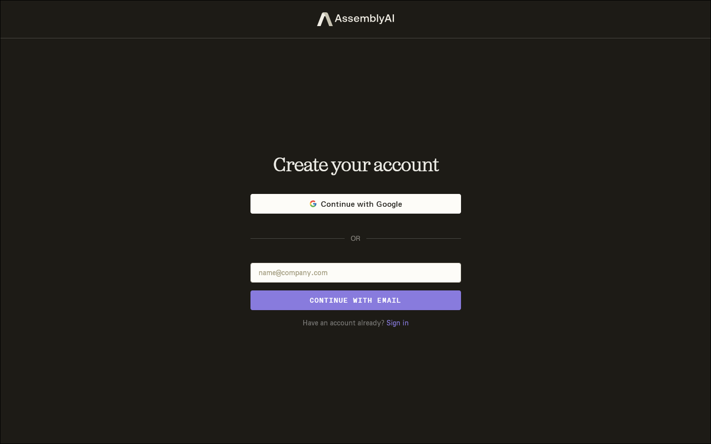
2 Une fois votre e-mail vérifié, ouvrez Manage ▸ API Keys.
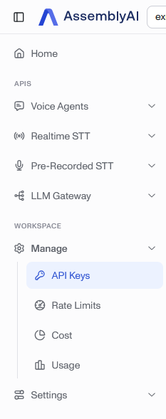
3 Copiez la Default API Key, ou cliquez sur Create new API key pour une clé dédiée.
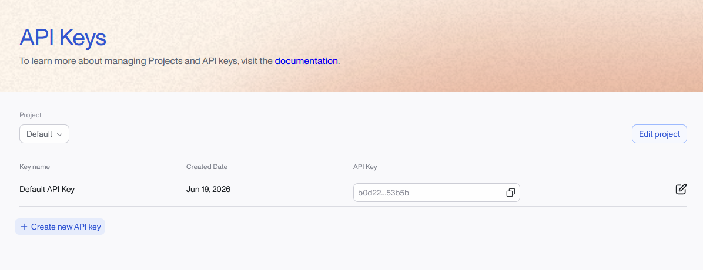
4 Nommez la nouvelle clé, par exemple SubVoxPro, puis cliquez sur Create.
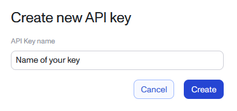
5 Copiez la clé depuis sa ligne.
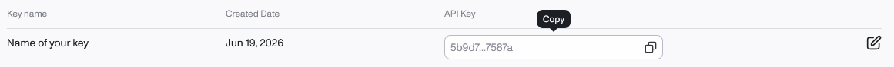
6 Collez-la dans Settings ▸ AssemblyAI.
L’offre gratuite est limitée à deux projets et deux clés. Aide officielle.
Gladia
Utilisé pour : transcription.
1 Inscrivez-vous sur https://app.gladia.io, par e-mail ou avec Google.
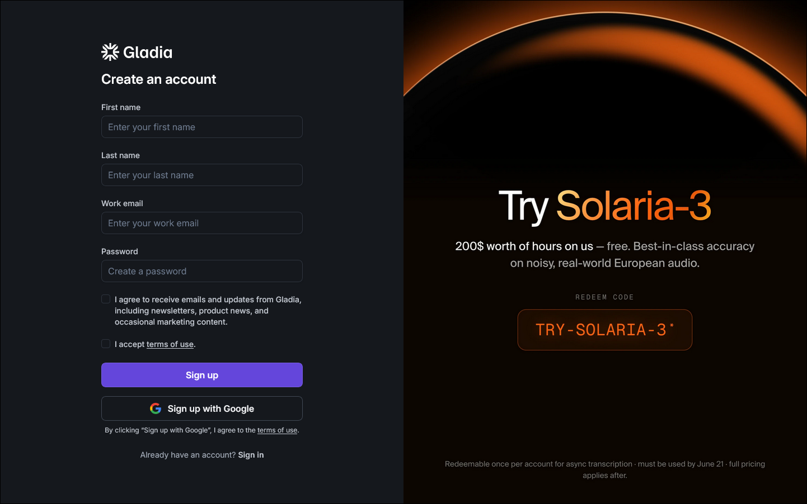
2 Ouvrez API Keys dans la barre latérale.
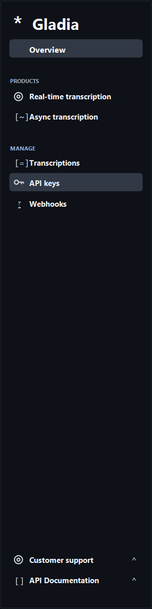
3 Créez si besoin une clé dédiée, avec un nom facile à reconnaître comme SubVoxPro.
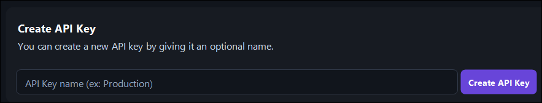
Copiez tout de suite sa valeur complète : la liste n’en montre ensuite parfois qu’une partie.
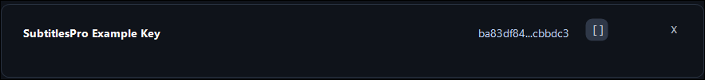
4 Collez-la dans Settings ▸ Gladia.
Offre gratuite : 10 h par mois, 20 appels par heure et 3 en parallèle au maximum. Aide.
Deepgram
Utilisé pour : transcription.
1 Créez un compte sur https://console.deepgram.com/signup, sans carte bancaire. Le crédit offert de 200 $ expire un an après l’inscription.
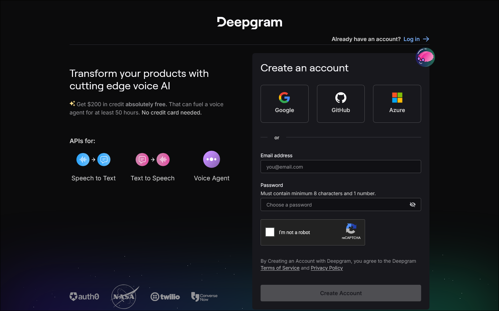
2 Ouvrez API Keys dans la console.
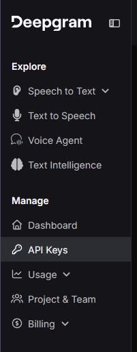
3 Cliquez sur Create a New API Key.
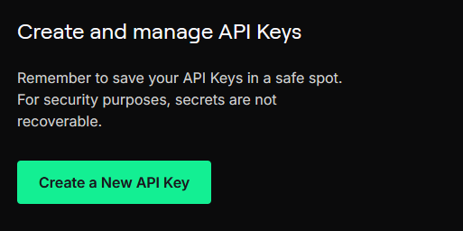
4 Nommez la clé et choisissez sa durée de validité avec Set expiration ; SubVox Pro n’impose rien.
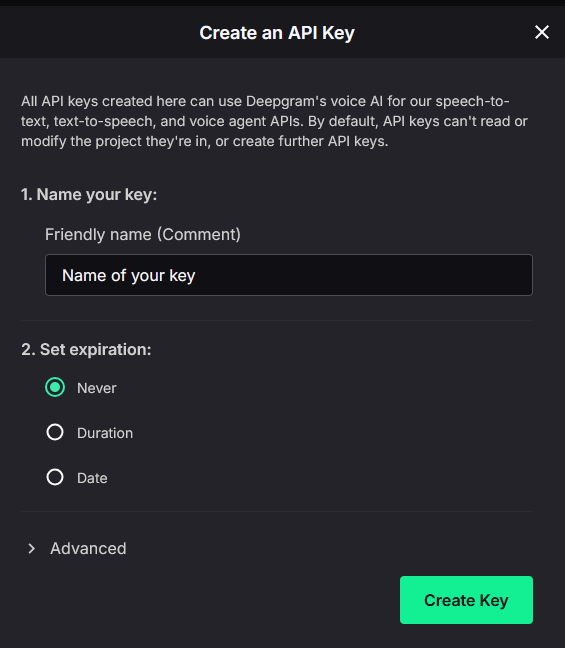
5 Copiez le secret et rangez-le en lieu sûr : Deepgram ne pourra plus l’afficher.
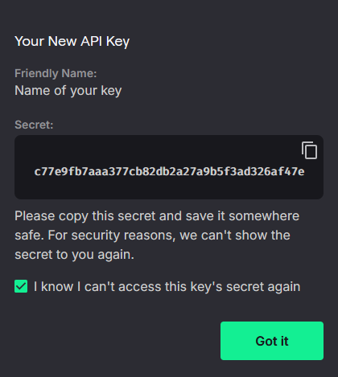
6 Collez-le dans Settings ▸ Deepgram.
Speechmatics
Utilisé pour : transcription.
1 Créez un compte sur https://portal.speechmatics.com : 100 $ de crédit offerts une fois, sans carte bancaire.
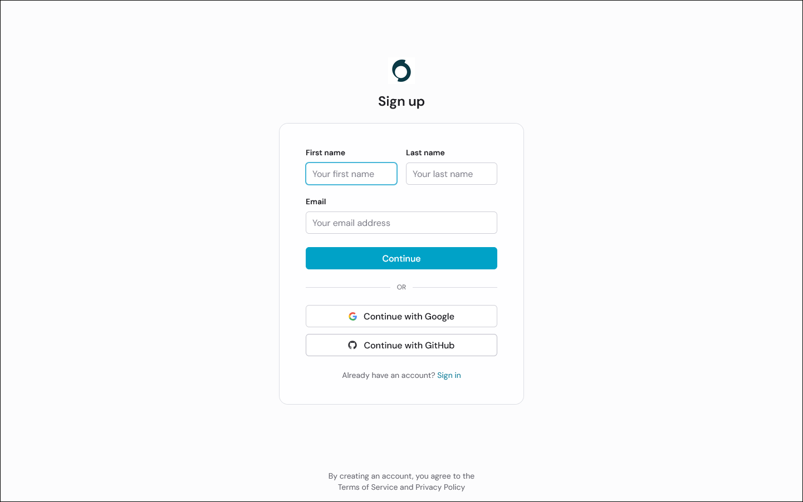
2 Ouvrez Manage ▸ API Keys dans le projet.
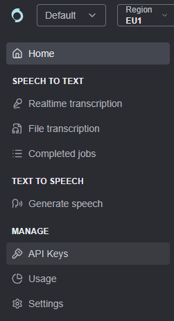
3 Cliquez sur Create new key.
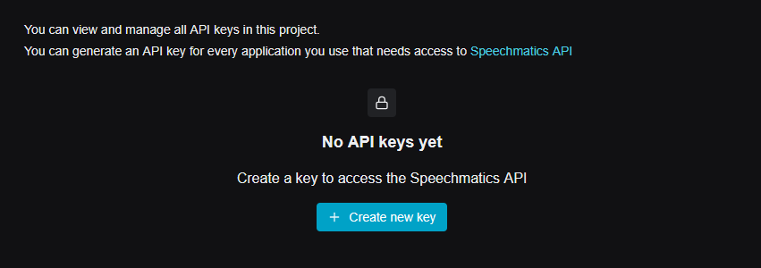
4 Nommez-la puis cliquez sur Generate new key.
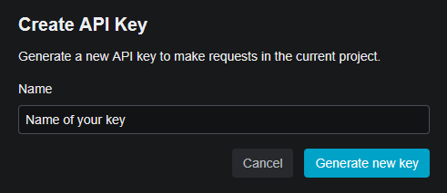
5 Copiez la clé avant de fermer la fenêtre : elle ne sera plus affichée.
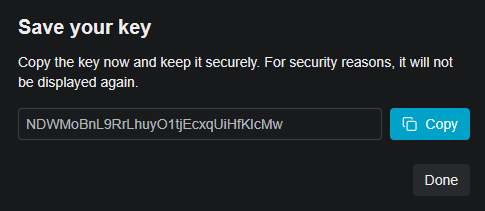
6 Collez-la dans Settings ▸ Speechmatics.
ElevenLabs
Utilisé pour : transcription Scribe et doublage TTS.
1 Inscrivez-vous sur https://elevenlabs.io (e-mail ou SSO), sans carte bancaire. L’offre gratuite donne environ 10 minutes par mois, pour un usage non commercial et à condition de créditer ElevenLabs. Doubler un jeu publié nécessite une offre payante.
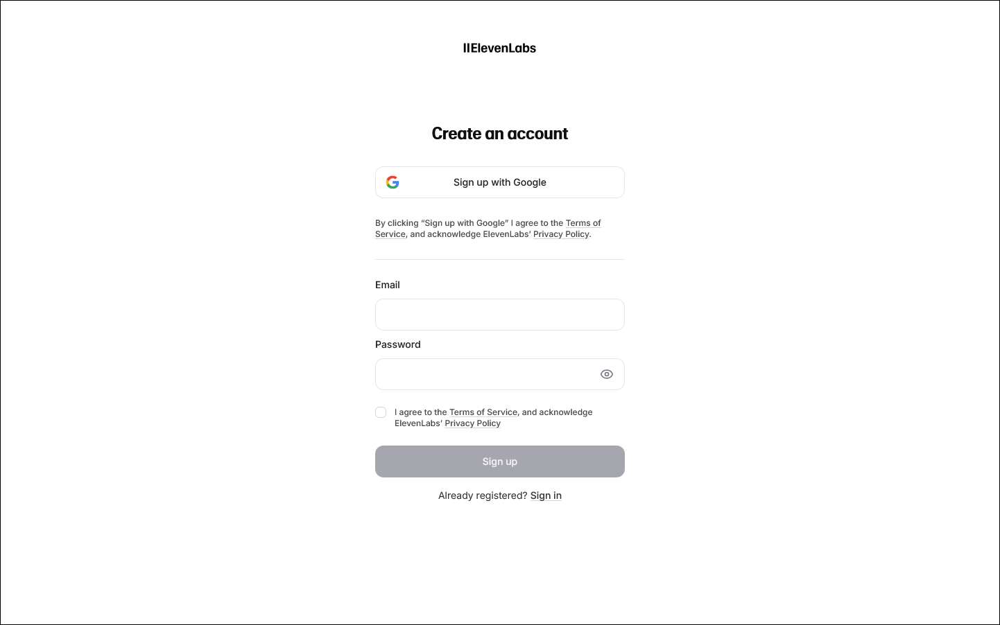
2 Ouvrez Developers, la section qui regroupe API, journaux, webhooks et variables d’environnement.
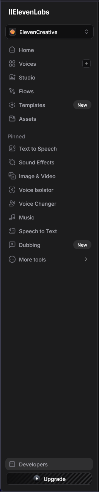
3 Ouvrez API Keys puis Create Key.
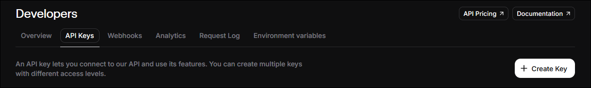
4 Nommez la clé. Avec Restrict Key, mettez Speech to Text et Text to Speech sur Access.
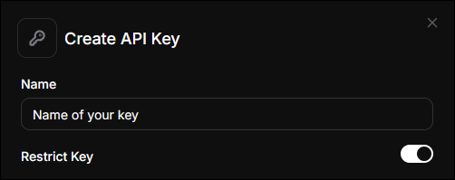
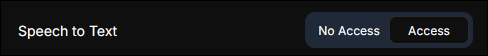
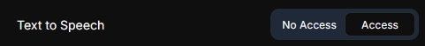
5 Copiez la valeur avant de fermer : la clé complète ne s’affiche qu’une fois.
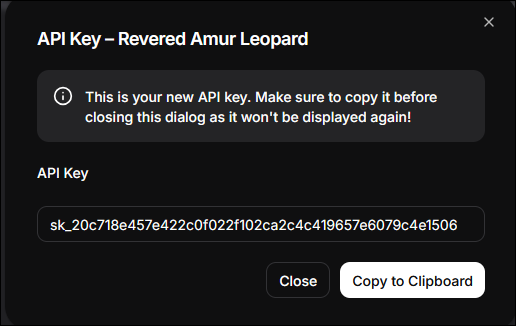
6 Collez-la dans Settings ▸ ElevenLabs. La même clé sert à la transcription et au doublage.
L’API TTS utilise l’en-tête
xi-api-keyetPOST /v1/text-to-speech/:voice_id. Référence.
Rev AI
Utilisé pour : transcription.
1 Créez un compte sur https://www.rev.ai/auth/signup, sans carte bancaire : 5 h de crédit sont offertes.
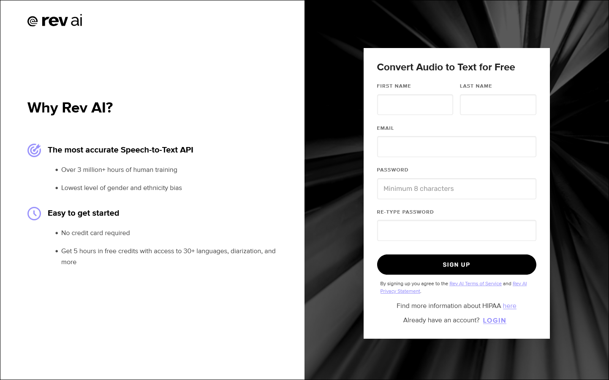
2 Ouvrez Access Token, dans le menu ou sur https://www.rev.ai/access_token.
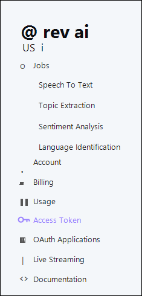
3 Cliquez sur Generate si vous n’avez pas encore de token (deux au maximum peuvent être actifs).
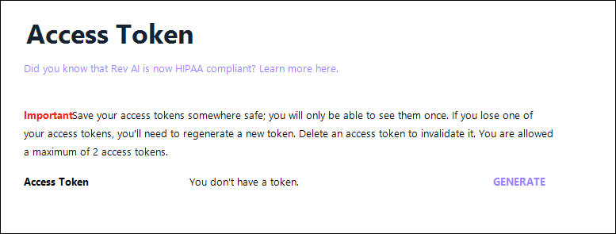
4 Copiez tout de suite la valeur complète, qui ne s’affiche qu’une fois : la liste n’en garde ensuite qu’un aperçu.
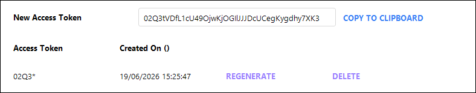
5 Collez-le dans Settings ▸ Rev AI.
Cartesia
Utilisé pour : transcription (Ink-Whisper, avec horodatage des mots) et doublage (voix Sonic).
1 Créez un compte sur https://play.cartesia.ai (e-mail ou SSO), sans carte bancaire : l’offre gratuite donne 20 000 crédits par mois, partagés entre les deux services : 1 crédit par caractère doublé, 3 crédits par seconde d’audio transcrit (environ 1,8 h par mois).
2 Ouvrez la page API Keys (https://play.cartesia.ai/keys) et cliquez sur New. Donnez à la clé un nom reconnaissable, par exemple SubVoxPro.
3 Copiez la clé (elle commence par sk_car_) avant de fermer la fenêtre.
4 Collez-la dans Settings ▸ Cartesia. La même clé sert à la transcription et au doublage.
5 Pour doubler, choisissez Cartesia dans l’onglet Text-to-Speech, puis une voix. La liste réunit la bibliothèque de Cartesia et les voix créées dans votre compte ; chaque voix parle toutes les langues prises en charge. Écouter une voix synthétise un court extrait, facturé comme un doublage.
L’offre gratuite est réservée à un usage personnel : un jeu vendu demande l’offre Pro (5 $/mois) ou supérieure. Sur l’offre gratuite, Cartesia peut utiliser vos données pour entraîner ses modèles, sauf si vous vous y opposez dans les réglages du compte. Une personnalité Guided règle le rythme, le volume et l’émotion des voix Sonic 3. Tarifs : https://cartesia.ai/pricing